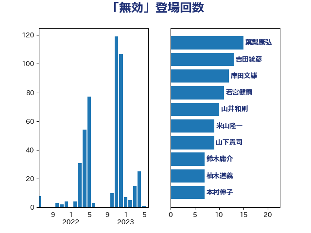

単語「無効」

| 葉梨康弘 | 自由民主党 | 15 回 |
| 吉田統彦 | 立憲民主党 | 13 回 |
| 岸田文雄 | 自由民主党 | 12 回 |
| 若宮健嗣 | 自由民主党 | 11 回 |
| 山井和則 | 立憲民主党 | 10 回 |
| 米山隆一 | 立憲民主党 | 9 回 |
| 山下貴司 | 自由民主党 | 9 回 |
| 鈴木庸介 | 立憲民主党 | 7 回 |
| 柚木道義 | 立憲民主党 | 7 回 |
| 本村伸子 | 日本共産党 | 7 回 |
| 齋藤健 | 自由民主党 | 6 回 |
| 川合孝典 | 国民民主党 | 6 回 |
| 山添拓 | 日本共産党 | 6 回 |
| 仁比聡平 | 日本共産党 | 6 回 |
| 福島みずほ | 社会民主党 | 5 回 |
| 川田龍平 | 立憲民主党 | 5 回 |
| 大口善徳 | 公明党 | 5 回 |
| 三木圭恵 | 日本維新の会 | 5 回 |
| 長妻昭 | 立憲民主党 | 4 回 |
| 田村智子 | 日本共産党 | 4 回 |
| 林芳正 | 自由民主党 | 4 回 |
| 宮崎政久 | 自由民主党 | 4 回 |
| 吉田久美子 | 公明党 | 4 回 |
| 古川禎久 | 自由民主党 | 4 回 |
| 加田裕之 | 自由民主党 | 4 回 |
| 鷲尾英一郎 | 自由民主党 | 3 回 |
| 阿部弘樹 | 日本維新の会 | 3 回 |
| 谷川とむ | 自由民主党 | 3 回 |
| 石川大我 | 立憲民主党 | 3 回 |
| 牧山ひろえ | 立憲民主党 | 3 回 |
| 山田勝彦 | 立憲民主党 | 3 回 |
| 宮本徹 | 日本共産党 | 3 回 |
| 奥野総一郎 | 立憲民主党 | 3 回 |
| 大石あきこ | れいわ新選組 | 3 回 |
| 塩村あやか | 立憲民主党 | 3 回 |
| 加藤勝信 | 自由民主党 | 3 回 |
| 高良鉄美 | 無所属 | 2 回 |
| 音喜多駿 | 日本維新の会 | 2 回 |
| 阿達雅志 | 自由民主党 | 2 回 |
| 鎌田さゆり | 立憲民主党 | 2 回 |
| 芳賀道也 | 国民民主党 | 2 回 |
| 篠原豪 | 立憲民主党 | 2 回 |
| 田中健 | 国民民主党 | 2 回 |
| 河野太郎 | 自由民主党 | 2 回 |
| 森山浩行 | 立憲民主党 | 2 回 |
| 梅村聡 | 日本維新の会 | 2 回 |
| 村田享子 | 立憲民主党 | 2 回 |
| 後藤茂之 | 自由民主党 | 2 回 |
| 平木大作 | 公明党 | 2 回 |
| 大西健介 | 立憲民主党 | 2 回 |
| 北神圭朗 | 無所属 | 2 回 |
| 北側一雄 | 公明党 | 2 回 |
| 上川陽子 | 自由民主党 | 2 回 |
| おおつき紅葉 | 立憲民主党 | 2 回 |
| 高野光二郎 | 自由民主党 | 1 回 |
| 高木宏壽 | 自由民主党 | 1 回 |
| 鈴木俊一 | 自由民主党 | 1 回 |
| 金子道仁 | 日本維新の会 | 1 回 |
| 金子恭之 | 自由民主党 | 1 回 |
| 遠藤良太 | 日本維新の会 | 1 回 |
| 赤澤亮正 | 自由民主党 | 1 回 |
| 西田昌司 | 自由民主党 | 1 回 |
| 萩生田光一 | 自由民主党 | 1 回 |
| 舟山康江 | 国民民主党 | 1 回 |
| 臼井正一 | 自由民主党 | 1 回 |
| 篠原孝 | 立憲民主党 | 1 回 |
| 福重隆浩 | 公明党 | 1 回 |
| 石橋通宏 | 立憲民主党 | 1 回 |
| 田村貴昭 | 日本共産党 | 1 回 |
| 牧義夫 | 立憲民主党 | 1 回 |
| 森本真治 | 立憲民主党 | 1 回 |
| 松本剛明 | 自由民主党 | 1 回 |
| 松原仁 | 立憲民主党 | 1 回 |
| 東徹 | 日本維新の会 | 1 回 |
| 杉久武 | 公明党 | 1 回 |
| 有村治子 | 自由民主党 | 1 回 |
| 日下正喜 | 公明党 | 1 回 |
| 斉藤鉄夫 | 公明党 | 1 回 |
| 掘井健智 | 日本維新の会 | 1 回 |
| 徳永久志 | 立憲民主党 | 1 回 |
| 平沼正二郎 | 自由民主党 | 1 回 |
| 市村浩一郎 | 日本維新の会 | 1 回 |
| 山本順三 | 自由民主党 | 1 回 |
| 山本太郎 | れいわ新選組 | 1 回 |
| 山本剛正 | 日本維新の会 | 1 回 |
| 山口那津男 | 公明党 | 1 回 |
| 小西洋之 | 立憲民主党 | 1 回 |
| 太栄志 | 立憲民主党 | 1 回 |
| 塩川鉄也 | 日本共産党 | 1 回 |
| 國重徹 | 公明党 | 1 回 |
| 和田政宗 | 自由民主党 | 1 回 |
| 務台俊介 | 自由民主党 | 1 回 |
| 前川清成 | 日本維新の会 | 1 回 |
| 倉林明子 | 日本共産党 | 1 回 |
| 伊東信久 | 日本維新の会 | 1 回 |
| 伊佐進一 | 公明党 | 1 回 |
| 仁木博文 | 無所属 | 1 回 |
| 中条きよし | 日本維新の会 | 1 回 |
| 中川貴元 | 自由民主党 | 1 回 |
| 三浦靖 | 自由民主党 | 1 回 |